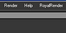

Shake uses a shared executable by default.
To setup Shake for RR, please follow these steps:
You have to run the rrWorkstationInstaller install the submission plugin.
In Shake, you have to run the script as shown in the screenshot.
It will start the rrSubmitter and loads your Houdini scene.
Note: You can also start the rrSubmitter manually and load (multiple) scene files
